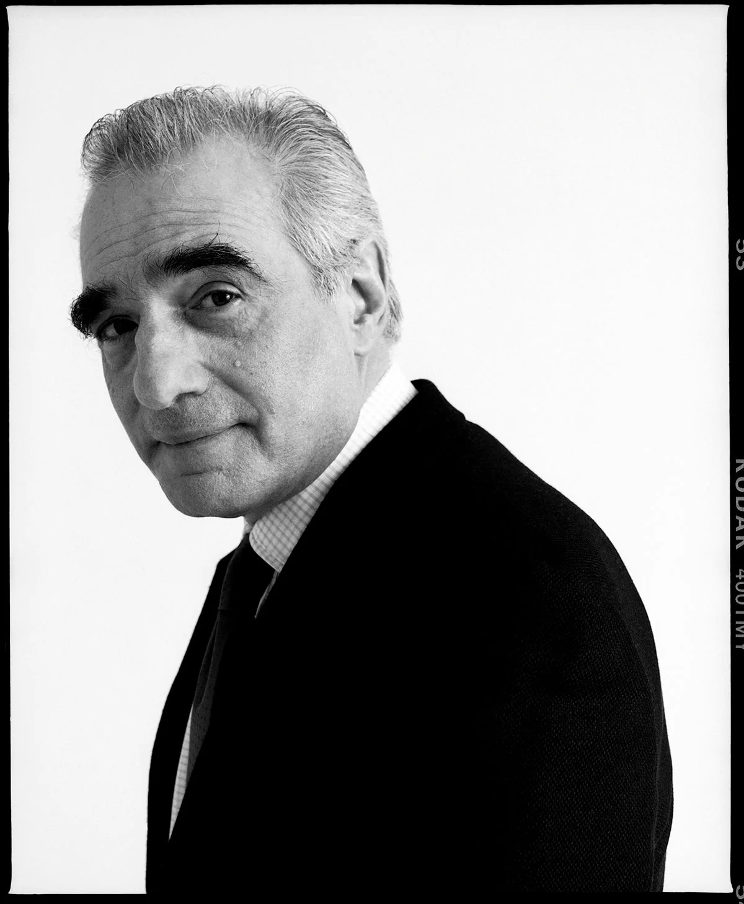

Martin Scorsese was born on November 17th, 1942 in Queens, New York and grew up in the Little Italy neighborhood of Manhattan. He is a first generation Italian-American, with all four of his grandparents immigrating to The United States from Sicily.
Scorsese's passion for film started at a young age, when his parents and older brother would often take him to movie theatres. After graduating from Cardinal Hayes High School in 1960, he decided to enroll in New York University where he studied English and Education and graduated with a Master's Degree. During his academics, Scorsese was inspired by his film professor to make multiple short films.
After graduating college, Scorsese went on to work as a cameraman and editor for multiple low budget films. In this time, he became friends with other future superstar film makers such as Francis Ford Coppola, Steven Spielberg, and Brian DePalma. Scorsese's breakthrough into the film industry started in 1973 when he directed the film "Mean Streets" featuring a young Robert De Niro and Harvey Keitel.
Scorsese’s collaboration with Robert De Niro proved to be one of the most iconic director-actor partnerships in cinema history, leading to renowned films such as Taxi Driver (1976), Raging Bull (1980), and Goodfellas (1990). His bold and unflinching storytelling style became synonymous with a new era of American filmmaking, often exploring heavy themes and frequently exploring narratives of urban crime.
Five Decades later, Martin Scorsese remains one of the most respected and celebrated filmmakers of all time. He is a master storyteller whose work continues to inspire others.
Major Achievements:
Wikimedia Foundation. (2025, April 26). Martin Scorsese. Wikipedia. https://en.wikipedia.org/wiki/Martin_Scorsese